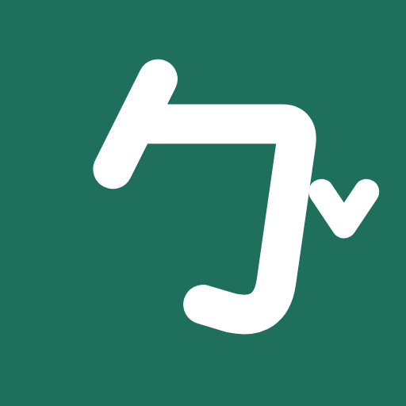
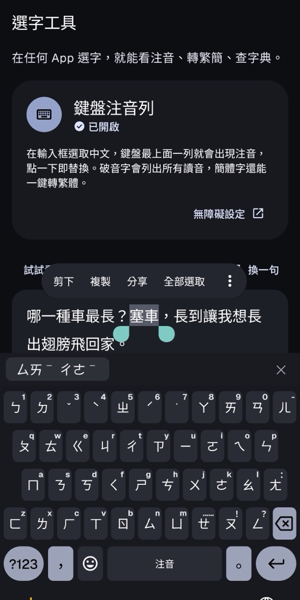

選字工具
選字就看注音 ✨
下載 APKAndroid 手機才能用・34 MB

它可以幹嘛
- 選一段中文，鍵盤上面就出現注音，點一下就換掉
- 破音字會列出所有讀音，像 長 有三個
- 一鍵简⇄繁，還能查國語辭典
- 完全離線，不連網、不看你的資料
怎麼裝
下載完點開檔案，手機問要不要允許「安裝不明應用程式」就按允許。想要鍵盤上的注音，打開 App 照著說明去無障礙設定開啟就好。

選字就看注音 ✨
下載 APKAndroid 手機才能用・34 MB

下載完點開檔案，手機問要不要允許「安裝不明應用程式」就按允許。想要鍵盤上的注音，打開 App 照著說明去無障礙設定開啟就好。